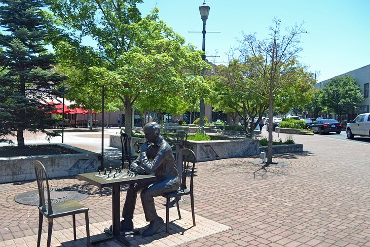
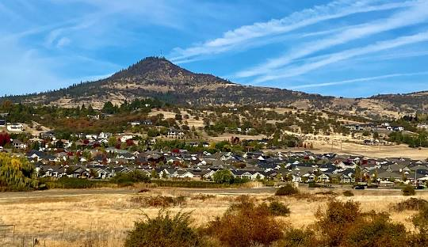

About Medford
Discover Medford, Oregon—a gateway to adventure and relaxation in the heart of the Rogue Valley. Nestled among picturesque mountains and rolling vineyards, Medford is an ideal destination for nature enthusiasts and wine lovers alike. Explore the stunning landscapes of nearby Crater Lake National Park or embark on a thrilling rafting trip down the Rogue River. For a more leisurely experience, visit the renowned vineyards and wineries that dot the valley, offering some of the best wine tasting tours in the region. Medford’s vibrant downtown area boasts charming boutiques, delightful eateries, and local craft breweries, ensuring a perfect blend of rural charm and urban sophistication.
Medford is also rich in cultural attractions and family-friendly activities. Enjoy a performance at the Craterian Theater or explore the fascinating exhibits at the Kid Time Children’s Museum. Outdoor enthusiasts can hike or bike the extensive trail systems at Prescott Park or explore the scenic beauty of Table Rocks. With its blend of natural beauty, cultural offerings, and welcoming community, Medford provides an unforgettable experience for visitors seeking both adventure and relaxation. Come and uncover the hidden gems of Medford, where every visit is a journey of discovery.
| Job | Median Base Salary | Maximum Base Salary | Growth Rate |
|---|---|---|---|
| Pyschologist | $74,000 | $95,000 | 6% |
| Dental Hygienist | $85,000 | $110,000 | 7% |
| Civil Engineer | $76,000 | $120,000 | 5% |